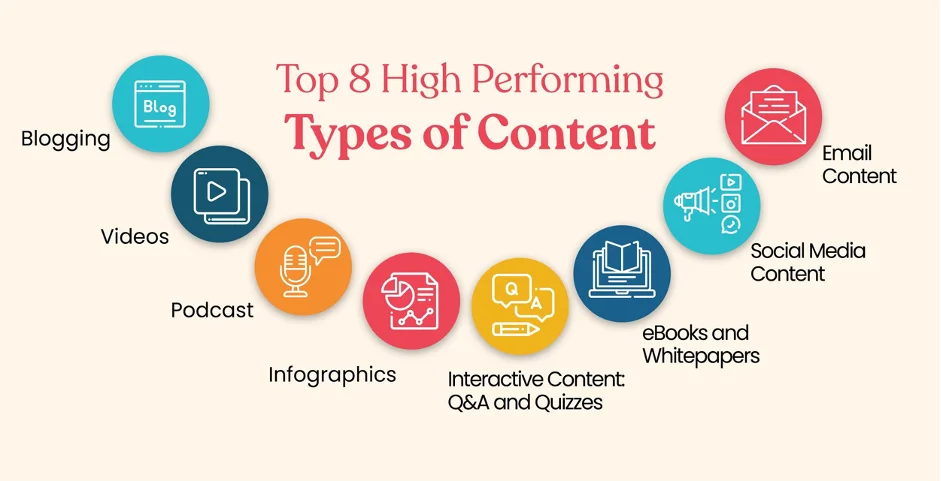

WEB TECHNOLOGY
TABLE OF CONTENTS
[Click on the topic you want to learn]
CLIENT/SERVER

- Clients:
- These are devices or software applications that initiate requests for services or resources. Examples include web browsers, email clients, and mobile apps.
Servers:
These are powerful computers or software systems that provide services and resources to clients. Examples include web servers, database servers, and file servers.
- 1. Request:
- A client initiates a request for a specific service or resource (e.g., loading a webpage, sending an email, accessing a database record).
- 2. Transmission:
- The request is sent over a network (like the internet) to the server.
- 3. Processing:
- The server receives the request, processes it, and performs the necessary actions (e.g., retrieving data, running calculations, sending emails).
- 4. Response:
- The server sends a response back to the client, providing the requested information or completing the requested task.
- Key Characteristics:
- Centralized Management:
Servers often manage resources and data centrally, making it easier to maintain and update systems.
Scalability:
Client-server systems can be scaled to accommodate more clients or more powerful servers as needed.
Security:
Security measures can be centralized on the server, making it easier to control access and protect data.
Examples:
Websites: Browsers (clients) request web pages from web servers.
Email:
Email clients (like Outlook or Gmail) request and send emails via email servers.
Online Banking:
Users access their bank accounts through online banking applications (clients) that connect to bank servers.
- Advantages:
- Centralized data management and security, Easier to manage and maintain, Scalable to handle increasing demands, and Cost-effective for many applications.
- Disadvantages:
- Potential for server overload if too many clients request services simultaneously.
Reliance on the server's availability and performance.
COMPONENTS OF WEB APPLICATION

A web application is typically composed of several interacting components that work together to deliver functionality to users. These components can be broadly categorized into client-side and server-side elements, along with supporting infrastructure.
1. Client-Side (Frontend):
This is the part of the application that users interact with directly through their web browser.
User Interface (UI): Consists of HTML for structure, CSS for styling, and JavaScript for interactivity.
Web Browser: The software used by the user to access and display the web application.
2. Server-Side (Backend):
This handles the logic, data storage, and processing that happens behind the scenes.
Application Server:
Executes the server-side code (written in languages like Python, Java, Node.js, PHP, etc.) and handles requests from the client.
Database Server:
Stores and manages the application's data (e.g., user information, content, transactions). Examples include SQL databases (MySQL, PostgreSQL) or NoSQL databases (MongoDB, Cassandra).
TYPES OF WEB CONTENT

Web content encompasses a wide variety of online material, including text, images, videos, audio, and interactive elements. It can be categorized into different types based on its purpose, format, and how it's consumed by users. Some common examples include blog posts, infographics, videos, podcasts, case studies, and user-generated content.
Here's a more detailed breakdown:
1. Text Content:
Blog posts:
Regularly updated articles on a specific topic, often used for content marketing and SEO.
Website copy:
Informational text on pages like the homepage, About page, and product pages, often with a marketing focus.
Long-form content:
In-depth articles, guides, or white papers, often used for lead generation.
Case studies:
Detailed reports on how a product or service helped a specific client.
Ebooks:
Downloadable, long-form content that provides value to users in exchange for contact information.
FAQs and knowledge bases:
Help center content that answers common customer questions and provides support.
2. Visual Content:
Images:
Photos, illustrations, graphics, and other visuals that can enhance text or stand alone.
Infographics:
Visual representations of data and information, often combining text and visuals.
Videos:
Moving images that can be used for entertainment, education, or marketing.
Animations:
Visual content created using motion graphics, GIFs, or other animation techniques.
3. Audio Content:
Podcasts:
Audio programs that can be downloaded or streamed, often used for storytelling or educational content.
Audiobooks:
Books in audio format, often used for entertainment or educational purposes.
Webinars:
Online seminars or presentations, often recorded and shared for later access.
4. Interactive Content:
Quizzes and tests:
Interactive elements that engage users and provide feedback or information.
Calculators and tools:
Interactive elements that allow users to perform calculations or access specific tools.
Interactive infographics:
Infographics that allow users to explore data in more depth.
Interactive maps:
Maps that provide information or allow users to explore specific locations.
5. Other Content Types:
User-generated content:
Content created by users, such as reviews, testimonials, or social media posts.
Newsletters:
Email-based content that provides updates, promotions, or other information.
Social media posts:
Content created for social media platforms, often designed to engage users and drive traffic.
6. Embedded Content:
Embedded videos:
Videos hosted on platforms like YouTube or Vimeo that are embedded on a website.
Embedded audio players:
Audio players that allow users to listen to music or podcasts directly on a website.
This is not an exhaustive list, but it covers many of the most common types of web content. The best content strategy will depend on the specific goals and target audience of the website.
HTTP - HTTP REQUEST

An HTTP request is a message sent by a client (e.g., a web browser) to a server to request a resource or perform an action. This request initiates the client-server communication in the Hypertext Transfer Protocol (HTTP) model.
An HTTP request typically consists of the following components:
Request Line:
HTTP Method (or Verb): Specifies the action to be performed on the resource (e.g., GET, POST, PUT, DELETE, PATCH).
Request Target (URL): The specific address of the resource being requested.
HTTP Version: Indicates the version of HTTP being used (e.g., HTTP/1.1, HTTP/2).
HTTP Request Headers:
Provide additional information about the request, the client, or the desired response. Examples include User-Agent, Accept, Content-Type, and Authorization.
HTTP Request Body (Optional):
Contains data sent to the server, primarily used with methods like POST and PUT for actions such as submitting form data or uploading files.
Common HTTP Request Methods:
- GET: Retrieves data from a specified resource.
- POST: Sends data to a server to create or update a resource.
- PUT: Replaces the entire content of a resource at a given URL with the provided data.
- PATCH: Partially modifies the data of a resource.
- DELETE: Removes a specified resource from the server.
- HEAD: Requests a response identical to a GET request but without the response body, primarily used to retrieve headers.
- OPTIONS: Describes the communication options for the target resource.
DYNAMIC WEB PAGES

A dynamic web page is a web page whose content and/or layout can change and adapt based on various factors, such as user interaction, data retrieved from a database, or other real-time information. Unlike static web pages, which deliver the same pre-built content to every visitor, dynamic pages are generated or modified at the time of the user's request.
Key characteristics of dynamic web pages:
Content Variability:
They can display different content to different users or at different times, based on factors like user preferences, location, search history, or database updates.
Interactivity:
They often incorporate interactive elements, allowing users to input information, submit forms, or trigger actions that modify the page's content or functionality.
Data Integration:
They frequently connect to databases or external data sources to retrieve and display information dynamically, such as product listings, news articles, or user profiles.
Server-Side and/or Client-Side Scripting:
Dynamic functionality is achieved through programming languages and scripts, which can be executed on the server (e.g., PHP, Python, Node.js) to generate HTML before sending it to the browser, or on the client-side (e.g., JavaScript) to manipulate the page after it has loaded in the user's browser.
APPLICATION SERVER

An application server is a software framework that hosts and manages applications, acting as a bridge between the user interface and backend systems like databases. It handles business logic, allowing for more complex and dynamic interactions than a simple web server. Application servers provide a runtime environment for applications, offering features like security, transaction management, and scalability.
Key Features and Benefits:
Middleware:
Application servers act as middleware, facilitating communication and integration between different parts of an application, such as web servers, databases, and other services.
Scalability:
They are designed to handle a large number of concurrent requests and can be scaled horizontally to accommodate increased traffic.
Centralized Management:
Application servers provide a centralized platform for deploying, configuring, and managing applications, simplifying administration and maintenance.
Security:
They offer robust security features, including authentication, authorization, and data encryption, to protect applications and data.
Performance Optimization:
Application servers often include features like caching and connection pooling to improve application performance and responsiveness.
Support for Various Languages and Frameworks:
They support multiple programming languages and frameworks, allowing developers to choose the best tools for their projects.
Simplified Development:
Application servers provide standardized frameworks and APIs, making it easier for developers to build and deploy applications.
WEB SECURITY

Web security encompasses a variety of measures and technologies designed to protect websites and web applications from cyber threats, unauthorized access, and data breaches. It involves securing not just the website itself, but also the data transmitted to and from it, as well as the underlying infrastructure.
Key aspects of web security include:
Authentication and Authorization:
Verifying user identities and controlling access to resources based on their roles and permissions.
Data Encryption:
Protecting sensitive data during transmission and storage using protocols like HTTPS (SSL/TLS) and encryption of databases.
Vulnerability Management:
Regularly assessing and patching vulnerabilities in web applications and systems to prevent exploitation.
Web Application Firewalls (WAFs):
Filtering malicious traffic and preventing attacks like SQL injection and cross-site scripting.
Intrusion Detection and Prevention Systems (IDS/IPS):
Monitoring network traffic and system activity for suspicious behavior and blocking malicious attempts.
Secure Coding Practices:
Following secure development guidelines to prevent common vulnerabilities like injection attacks and cross-site scripting.
Regular Backups:
Creating regular backups of website data and configurations to facilitate recovery in case of a security incident.
User Education:
Training users to recognize and avoid phishing attacks and other social engineering tactics.
Back to top